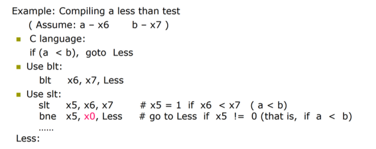
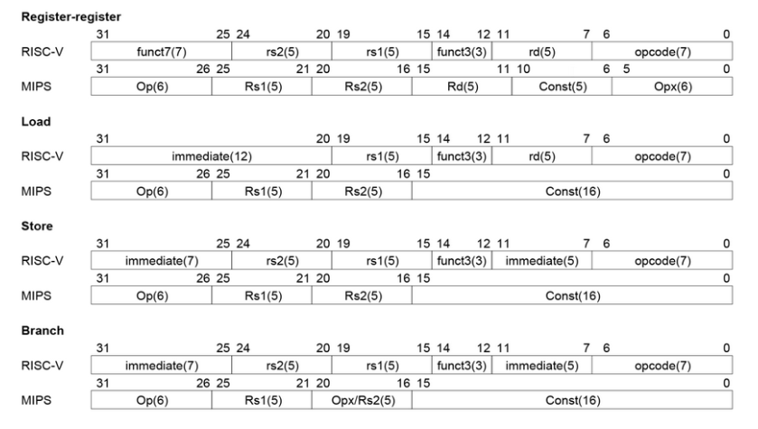

Instructions: Language of the Computer
约 3865 个字 20 行代码 39 张图片 预计阅读时间 26 分钟
Introduction
- Language of the machine
- Instructions (Statement)
- Instruction Set (Syntax)
- Design goal
- Maximize performance
同样资源的情况下性能大 - Minimize cost
同样性能的情况下成本低 - Reduce design time
指令集简单，易于理解
- Maximize performance
- 我们使用的是 RISC-V 架构
指令集基本的结构：Operation 操作 ; Operand 操作数
- 不同指令集，指令的编码可以不同。如 000 表示加法，这也叫指令的 Encoding.
- 操作数位宽可以不同，可以是立即数 / 寄存器 / 内存。
Operation
-
Every computer must be able to perform arithmetic.
- Only one operation per instruction
- Exactly 3 variables e.g.
add a, b, c即 \(a\leftarrow b+c\)
注意结果放在第一个位置，这样易于解码
-
Design Principle 1 - Simplicity favors regularity.
Operands of the Computer Hardware
Register Operands
- Arithmetic instructions use register operands.
-
RISC-V has a \(32\times 64\)-bit register file
- Use for frequently accessed data
- 32-bit data is called a word. 64-bit is called a doubleword.
- we call them
x0tox31
-
Design Principle 2 - Smaller is faster.
寄存器不是越多越好，多了之后访问慢。Name Register Name Usage Preserved or call? x0 0 The constant value 0 n.a. x1(ra) 1 Return address(link register) yes x2(sp) 2 Stack pointer yes x3(gp) 3 Global pointer yes x4(tp) 4 Thread pointer yes x5-x7 5-7 Temporaries no x8-x9 8-9 Saved yes x10-x17 10-17 Arguments/results no x18-x27 18-27 Saved yes x28-x31 28-31 Temporaries no 为什么寄存器
x0一直为 0Make the common case fast. 因为经常有 0 参与计算，将其存在一个寄存器中，便于计算。
Memory Operands
- Data transfer instructions
- Load: Load values from memory to register; ld:load doubleword
- Store: Store result from register to memory; sd:store doubleword
- Memory is byte addressed.
-
RISC-V is Little Endian
Little vs Big Endian vs *Bi-endian
若将内存地址抽象成一维的数组，从右往左地址增加

总结：小端：低位放在地址较小处；大端相反
-
words align: 一个字是 4 字节，在内存读取数据是按照一个字一个字地方式读取，words align 要求字的起始地址一定要是 4 的倍数。RISC-V does not require words to be aligned in memory
Memory Alignment

第一个是对齐的，第二个是不对齐的。
对齐的好处显而易见，而不对齐的好处是省空间
Memory Operand Example
(默认数组是双字的, h inx21, base address of A in x22)翻译为 RISC-V 代码得到 地址是以 byte 为单位，所以要偏移 \(8\times 8=64\) bytes.
load 和 store 是唯二可以访问存储器的指令。
Registers vs. Memory
- Registers are faster to access than memory
- Operating on memory data requires loads and stores
- Compiler must use registers for variables as much as
possible
编译器尽量使用寄存器存变量。只有在寄存器不够用时，才会把不太用的值放回内存。
Constant or Immediate Operands
Immediate: Other method for adding constant
- Avoids the load instruction
- Offer versions of the instruction
e.g.addi x22, x22, 4 - Design Principle 3 - Make the common case fast.
Summary

- 为什么内存是 \(2^{61}\) 个 doublewords?
可以表示的地址有这么多，因为我们以 64 位寄存器为基址，可以表示的双字就是 \(2^{64}/2^3=2^{61}\) (这里 \(2^3\) 表示 8 个字节，即双字). 即我们的load指令可以访问的范围有这么大。
Representing Instructions in the Computer
- All information in computer consists of binary bits.
- Instructions are encoded in binary
called machine code ( 机器码 ) - Mapping registers into numbers
0 for registerx0, 31 for registerx31. e.t.c. - RISC-V instructions
32 位指令编码。所有指令都是规则化的，即一部分是 opcode, 一部分是 operands 等等。
Summary of RISC-V architecture
From the given summary we can find that:
All instructions in RISC-V have the same length 32
\(\Uparrow\)
Design Principle 4 - Good design demands good compromises
R-format

- opcode: operaion code
- rd: destination register number
- funct3: 3-bit function code(additional opcode)
例如，我们加法减法可以做成一个 opcode, 然后利用 funct 进行选择。 - rs1/rs2: the first/second source register number
- funct7: 7-bit function code(additional opcode)
I-format
- Immediate arithmetic and load instructions
e.g.addi,ld - rs1: source or base address register number
- immediate: constant operand, or offset added to base
address
将 rs2, funct7 合并了，得到 12 位立即数
S-format
- rs1: base address register number
- rs2: source opearand register number
- immediate:
Split so that rs1 and rs2 fields are always in the same place.
Example

Stored Program Computer

- Instructions represented in binary, like data.
- Instructions and data stored in memory.
- Programs can operate on programs. e.g. compiplers, linkers.
- Binary compatibility allows compiled programs to work on different computers
Logical Operations
| Operation | C | RISC-V |
|---|---|---|
| Shift left | << | slli(shift left logical immediate) |
| Shift right | >> | srli(shift right logical immediate) |
| Bit-by-by AND | & | and, andi |
| Bit-by-by OR | | | or, ori |
| Bit-by-by XOR | ^ | xor, xori |
| Bit-by-by NOT | ~ | - |
RISC-V 没有直接提供 BitWise NOT 指令，但是我们可以通过异或实现（与全 F 异或）
Shift

- I 型指令
- 为什么还有
funct6
移位不需要这么多立即数，只要六位 (\(2^6=64\)) 即可。 - 左移 i 位相当于乘 \(2^i\), 右移 i 位相当于除 \(2^i\).
AND
OR

XOR
Instructions for making decisions
Branch instructions
beq reg1, reg2, Label
相等则跳转bne reg1, reg2, Label
不相等则跳转
Example

store 的立即数是作为数据的地址 , beq 的立即数是作为运算的地址（加到 PC 上）因此二者的指令类型不同。
跳转的范围有限制，因为立即数只有 12 位
Loop
值得注意的是这里的数组是以 doubleword 为单位的，所以实际内存地址 x10 每经过一个循环加 8
slt instruction
set on if less than.
slt x2, x3, x4 # x2=1 if x3 < x4
R 型指令
Example

这里的 blt 类似beq and bne是 branch if Less than
More Conditional Operations
blt rs1, rs2, L1
若rs1<rs2则跳到 L1bge rs1, rs2, L1
若rs1>=rs2则跳到 L1
Signed vs. Unsigned
默认是有符号数进行比较
- Signed comparison:
blt,bge - Unsigned comparison:
bltu,bgeu
Case/Switch
Compiling a switch using jump address table


\(x_6\) 是跳转表的基地址，\(x_7\leftarrow x_6+8*k\)
jalr x1, 0(x7)
把下一条指令的地址 PC+4 放入 x1 寄存器，随后跳向 x7 + 0 的指令地址。
这里我们 jalr x0, ... 因为我们不能改变 x0 寄存器，所以这里仅用作占位，并没有实际存储返回地址。
basic block
A basic block is a sequence of instructions with
- No embedded branches (except at end)
- No branch targets (except at beginning)
Supporting Procedures in Computer Hardware
Procedure/function --- be used to structure programs
为了完成特定任务。易于理解，可以复用。
调用函数的步骤
- Place Parameters in a place where the procedure can access them (in registers
x10~x17)
传参 - Transfer control to the procedure
控制权给子程序 - Acquire the storage resources needed for the procedure
- Perform the desired task
- Place the result value in a place where the calling program can access it
- Return control to the point of origin (address in
x1)
Procedure Call Instructions
- Procedure call: jump and link
jal x1, ProcedureLabel- Address of following instruction put in
x1 - Jumps to target address
- Address of following instruction put in
- Procedure return: jump and link register
jalr x0, 0(x1)- Like jal, but jumps to
0 + address in x1 - Use
x0as rd (x0cannot be changed) - Can also be used for computed jump
- Like jal, but jumps to
不能用 jal 跳回来，跳进函数的地址的是固定的 , Label 一定。但是跳回来的地址不一定，要用 x1 存储才能跳回。
Using More Registers
- Registers for procedure calling
x10~x17(a0~a7): eight argument registers to pass parameters or return values
用来传参的x1: one return address register to return to origin point
- Stack：Ideal data structure for spilling registers
- Push, pop
- Stack pointer (
sp):x2指向最栈顶，即最后一个有效数据所在的位置
-
In RISC-V Stack grow from higher address to lower address
-
Push:
sp = sp - 8e.g.
-
Pop:
sp = sp + 8e.g.
-
Compiling a leaf procedure

| Name | Register Name | Usage | Preserved or call? |
|---|---|---|---|
| x0(zero) | 0 | The constant value 0 | n.a. |
| x1(ra) | 1 | Return address(link register) | yes |
| x2(sp) | 2 | Stack pointer | yes |
| x3(gp) | 3 | Global pointer | yes |
| x4(tp) | 4 | Thread pointer | yes |
| x5-x7(t0-t2) | 5-7 | Temporaries | no |
| x8(s0/fp) | 8 | Saved/frame pointer | yes |
| x9(s1) | 9 | Saved | yes |
| x10-x17(a0-a7) | 10-17 | Arguments/results | no |
| x18-x27(s2-s11) | 18-27 | Saved | yes |
| x28-x31(t3-t6) | 28-31 | Temporaries | no |
| PC | - | Auipc(Add Upper Immediate to PC) | yes |
t0~t6临时寄存器，不需要在函数中保存s0~s11saved registers
标有 Preserved 表明我们需要在函数开始时保存该寄存器的值，并在离开函数前恢复寄存器的值。（如上例）
这样起到的效果是让临时寄存器的值暂存到栈中，再返回出来，调用函数前后临时寄存器的值不发生变化
Nested Procedure
递归形式的函数 下图 FP 表示函数帧指针
Example
Preserved or not
寄存器一般靠堆栈保存 , sp 靠加减保存。
Communicating with People
Character set
- Byte-encoded character sets
e.g. ASCII, Latin-1 - Unicode: 32-bit character set
e.g. UTF-8, UTF-16
我们知道：编码中有不同长度的数据（例如 char,int,short int
-
Load byte/halfword/word/doubleword: Sign extend to 64 bits in rd
我们的寄存器是 64 位的，因此需要扩充。lb rd, offset(rs1)lh rd, offset(rs1)lw rd, offset(rs1)ld rd, offset(rs1)
Example
同样是取 A[4] 的值，不同的数据类型 offset 不同。
char为 4,short int为 8,int为 16. -
Load byte/halfword/word/doubleword unsigned: 0 extend to 64 bits in rd
lbu rd, offset(rs1)lhu rd, offset(rs1)lwu rd, offset(rs1)
-
Store byte/halfword/word/doubleword: Store rightmost 8/16/32 bits
sb rs2, offset(rs1)sh rs2, offset(rs1)sw rs2, offset(rs1)sd rs2, offset(rs1)
存储就不需要考虑扩充问题，因为我们不做运算，只是把对应部分放到对应位置。
offset 可以是 3. 因为 RISC-V 是可以不对齐的。（实际上 sh offset 一般是 2 的倍数, sw 是 4 的倍数）
Compiling a string copy procedure
Tip
其实，i 不应该分配给 s3, 分配给一个临时寄存器，就可以不用堆栈保存 s3 了。因为临时寄存器不需要在函数中保存到堆栈；而保存寄存器需要我们在函数开始时保存该寄存器的值，并在离开函数前恢复寄存器的值。
对于一个 leaf procedure( 不再调用其他 procedure) 编译器要尽可能用完所有的临时寄存器，再去用其他的寄存器。
为什么强调 leaf procedure? - 因为对于非 leaf 的函数（例如递归函数
RISC-V Addressing for 32-Bit Immediate and Addresses
Wide Bit Immediate addressing
如何将一个寄存器初始化为一个任意的立即数。
lui reg, imm 可以把 20 位的常数放到寄存器中。(U-type)
注意这里，我们会把立即数放入寄存器的 [31:12] 位，低位会填充为 0.
Loading a 32-bit constant

我们最终想放入寄存器的值是 32 位常数0x003D0900 . 先利用 lui 将高 20 位 976 放入寄存器中，随后利用加法指令加上 低 12 位，即 2304.
Branch Addressing
SB-type
- PC-relative addressing
\(Target\ address = PC + Branch\ offset = PC + immediate \times 2\)
这里低位会默认补 0. 这样可以把地址范围扩大一倍。(注意：末位补0和immediate * 2描述的是同一件事情)
Jump Addressing
UJ-type( 只有 jal 指令 , jalr属于 I 型指令 )
20-bit immediate for larger range, 低位默认补 0, 故实际表示立即数为 [20:0] 共 21 位。 ( 当然在前面计算时前面还需要补 0)

Example

Branching far away
在指令集设计中，为了简化指令格式和硬件实现，分支指令通常使用 有符号立即数 表示目标地址的偏移量。这种设计的偏移范围是有限的。例如：
RISC-V 的分支指令（如 beq、bne）使用 12 位立即数 表示偏移，跳转范围为：
[−211,211−1]×2 字节 =±4 KB
[−211,211−1]×2 字节 =±4KB
如果目标地址超出这个范围，直接用分支指令就无法实现跳转。
这种情况称为 branching far away。
方法 1：使用多条分支指令
可以通过多次分支实现远距离跳转：
- 跳到一个中间地址（中转点
） ； - 从中间地址跳到目标地址。
方法 2：结合 JAL 指令
JAL 指令（Jump and Link）可以跳转到更远的目标，因为它的偏移范围更大（20 位立即数，跳转范围 ±1 MB
对于远距离的条件分支，可以结合 JAL 和 B 指令： 条件分支跳转到中间点；
使用 JAL 实现更远的跳转。
示例：
RISC-V Addressing Summary
寻址方式是指令集的核心区别。
- 立即数寻址
addi x5, x6, 4 - 寄存器寻址
add x5, x6, x7 - 基址寻址
ld x5,100(x6) - PC 相对寻址
beq x5,x6,L1
Example

RISC-V Disassembly
把机器码翻译为汇编指令。
- opcode
先看 opcode, 确定是哪类指令，随后就可以按照每类指令的格式进行具体划分了。
Example

Synchronization in RISC-V
Warning
下面这些内容与多核编程 / 多进程比较相关？貌似不是本课程和考试的重点，讲的也不是很清楚
- Two processors sharing an area of memory
- P1 writes, then P2 reads
- Data race if P1 and P2 don’t synchronize
- Result depends of order of accesses
- Hardware support required
- Atomic read/write memory operation
- No other access to the location allowed between the read and write
- Could be a single instruction
- e.g.* atomic swap of register ↔ memory
- Or an atomic pair of instructions
Load reserved: lr.d rd,(rs1)
把地址 rs1 的值放到寄存器 rd 中，同时
Store conditional: sc.d rd,(rs1),rs2
把寄存器 rs2 的值放入地址 rs1.
如果成功那么 rd 里面是 0. 如果上条指令 load 后，这个地方的值被改变了，那么就失败了，返回 1
用比较简单的话来讲，就是 lr.d 后，CPU 霸道的标记了这个内存地址，其他 CPU 不允许再动，如果其他 CPU 对这个内存地址做了操作，那么再进行 sc.d 后，会失败，把 rd 置为 1
atomic swap
一直到这一对 Atmoic read/write operation 成功执行才退出
lock

大致理解一下：内存地址空间可能被许多进程抢着用，进程需要知道这块内存地址是否被别的进程占用 -- 也就是 lock 的用处
如果某块地址 lock 为 0，那么我们的进程就可以使用这块地址，将这块地址抢过来后再将 lock 设为 1，这样其他进程就动不了这块内存了
地址 x20 放的是锁，如果锁为 0, 说明我们现在可以存入数据，则我们获得锁随后存入，并释放锁。否则需要等锁释放了才能存。
Translating and starting a program

Producing an Object Module
Warning
下面的许多内容都只是做个了解，具体会在编译原理中介绍
Provides information for building a complete program from the pieces(Header).

- Text segment: translated instructions
- Static data segment: data allocated for the life of the program
- Relocation info: for contents that depend on absolute location of loaded program
- Symbol table: global definitions and external refs
- Debug info: for associating with source cod
Link
Object modules(including library routine) \(\rightarrow\) executable program
- Place code and data modules symbolically in memory
- Determine the addresses of data and instruction labels
- Patch both the internal and external references (Address of invoke)
Loading a Program
Load from image file on disk into memory
- Read header to determine segment sizes
- Create virtual address space
- Copy text and initialized data into memory
Or set page table entries so they can be faulted in - Set up arguments on stack
- Initialize registers (including sp, fp, gp)
- Jump to startup routine
Copies arguments to x10, … and calls main pWhen main returns, do exit syscall
Dynamic Linking
Only link/load library procedure when it is called.
静态链接已经编入文件了，动态链接是在运行时链接，可以用到最新的代码
- Requires procedure code to be relocatable
- Avoids image bloat caused by static linking of all (transitively) referenced libraries
- Automatically picks up new library versions
Arrays versus Pointers
指针是可以改变的，但是数组首地址不能改变，因此翻译成汇编的结果也有所不同。
Clearing an Array

Real Stuff: MIPS Instructions
MIPS: commercial predecessor to RISC-V
- Similar basic set of instructions
- 32-bit instructions
- 32 general purpose registers, register 0 is always 0
- 32 floating-point registers
- Memory accessed only by load/store instructions
- Consistent use of addressing modes for all data sizes
Different conditional branches
- For <, <=, >, >=
- RISC-V:
blt, bge, bltu, bgeu - MIPS:
slt, sltu(set less than, result is 0 or 1) - Then use
beq, bne to complete the branch 
Real Stuff: The Intel x86 ISA
Other RISC-V Instructions
- Base integer instructions (RV64I)
- Those previously described, plus
auipc rd, immed// rd = (imm<<12) + pc- follow by
jalr(adds 12-bit immed) for long jump slt, sltu, slti, sltui: set less than (like MIPS)addw, subw, addiw: 32-bit add/subsllw, srlw, srlw, slliw, srliw, sraiw: 32-bit shift
- 32-bit variant: RV32I
registers are 32-bits wide, 32-bit operations
RV64I 是最基本的。编译器需要知道当前执行是基于多少位的处理器。
Instruction Set Extensions
- M: integer multiply, divide, remainder
- A: atomic memory operations
- F: single-precision floating point
- D: double-precision floating point
- C: compressed instructions
16 位的指令，用于低成本产品（嵌入式）
Fallacies ( 谬误 )
- Powerful instruction \(\Rightarrow\) higher performance
- Use assembly code for high performance
- Backward compatibility \(\Rightarrow\) instruction set doesn’t change
Pifalls ( 陷阱 )
- Sequential words are not at sequential addresses ( 应该 +4)
- Keeping a pointer to an automatic variable after procedure returns